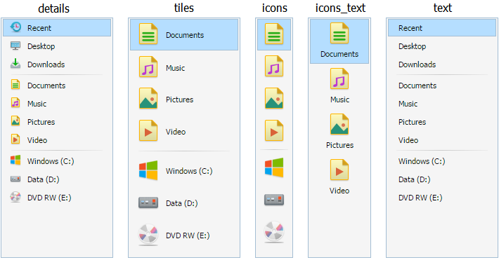
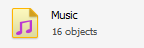
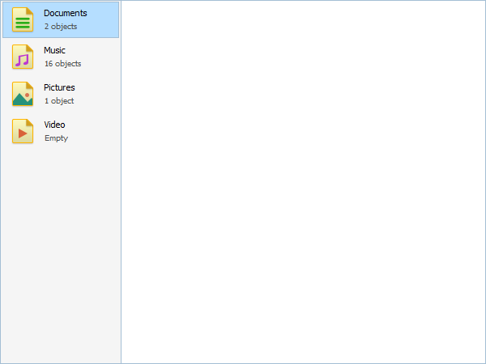
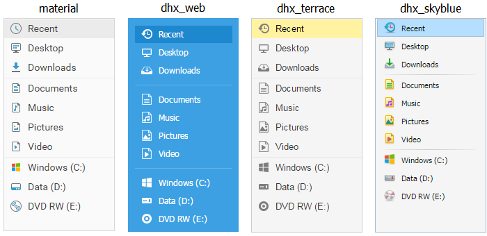
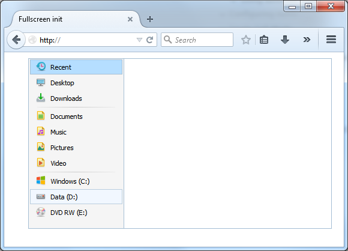
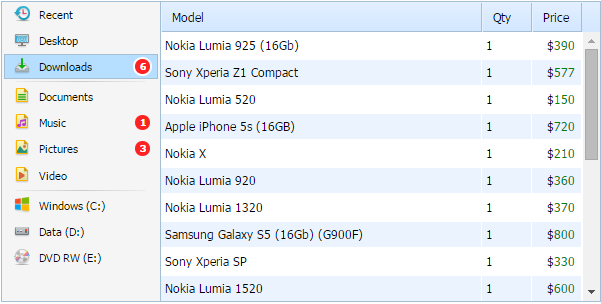
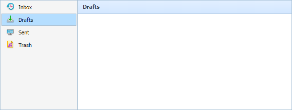
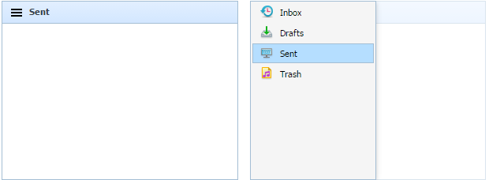

There are 5 predefined templates for sidebar items which are used for displaying items' elements and can be customized.
They are "details", "tiles", "icons", "icons_text", "text":

You can apply this or that template during the dhtmlxSidebar initialization:
var mySidebar = new dhtmlXSideBar({
template: "details"
});
Each default template contains either an icon (16x16 or 32x32) or a text, or an icon and a text. In any case, in order to add a new item, the following attributes are used:
It means that no matter what template you've chosen, you should use the following key names:
mySidebar.addItem({
text: "items text",
icon: "item icon"
});
Related sample: Template [details]
You can also create your own template. For this purpose, you should complete several simple steps:
1) First of all, you need to decide what name the template will have. Let it be "myview".
2) Next, you should define the template structure. For example, we'll use the one shown in the picture
(an icon 32x32 on the left, 2 text lines on the right):

3) Now you can add html markup for one item:
dhtmlXSideBar.prototype.templates.myview =
// icon 32x32
"<img class='dhxsidebar_item_icon' src='#icons_path##icon#' border='0'>"+
// general area for text
"<div class='dhxsidebar_item_text'>"+
"<div class='line_one'>#text#</div>"+ // 1st line of text
"<div class='line_two'>#text2#</div>"+ // 2nd line of text
"</div>";
In this code we use common sidebar styles for the icon and the text (as usual classes are used).
But we should correct them a little bit (to define the height, line-height, paddings and so on).
4) Let's also add some CSS code.
The names of classes will be placed in the container which has the name of our new view: "dhxsidebar_tpl_myview"
You should set the height of the whole item
.dhxsidebar_tpl_myview div.dhxsidebar_item {
height: 43px;
line-height: 43px;
}
and specify coordinates for the icon (by default it has the position: absolute parameter specified)
.dhxsidebar_tpl_myview img.dhxsidebar_item_icon {
left: 8px !important;
top: 6px!important;
}
Here you can either add !important or use the full classname to override the sidebar defaults.
As for the text lines, you should specify the line-height, margin-left and margin-top properties for them:
.dhxsidebar_tpl_myview div.line_one {
margin-left: 51px;
margin-top: 4px;
line-height: 16px;
font-size: 11px;
}
.dhxsidebar_tpl_myview div.line_two {
margin-left: 51px;
margin-top: 1px;
line-height: 16px;
font-size: 10px;
color: #515151;
}
That's all. Now let's try to initialize Sidebar and see the result:
var mySidebar = new dhtmlXSideBar({
parent: "sidebarObj",
icons_path: "icons/win_32x32/",
template: "myview",
width: 150,
items: [
{id: "a1", text: "Documents", text2: "2 objects", icon: "documents.png"},
{id: "a2", text: "Music", text2: "16 objects", icon: "music.png"},
{id: "a3", text: "Pictures", text2: "1 object", icon: "pictures.png"},
{id: "a4", text: "Video", text2: "Empty", icon: "video.png"}
]
});

Related sample: Custom template
Related sample: Custom template 2
You can choose one of the 4 available skins for Sidebar:

The "material" skin is used by default.
A skin can be set during the dhtmlxSidebar initialization:
var mySidebar = new dhtmlXSideBar({
skin: "dhx_web"
});
dhtmlxSidebar supports offsets that can be useful in full-screen init. For example, to add a logo to the header or company's info to the footer.
1) you can set offset on init:
var mySidebar = new dhtmlXSidebar({
parent: document.body, // parent container
items: [...],
offsets: {
top: 10,
right: 20,
bottom: 30,
left: 40
}
});
2) or you can set it from JS code:
mySidebar.setOffsets({
top: 10,
right: 20,
bottom: 30,
left: 40
});

There's a possibility to adjust sidebar if its parent element's size was changed:
var mySidebar = new dhtmlXSideBar("parentId");
// if you change parent's size
document.getElementById("parentId").style.width = "800px";
document.getElementById("parentId").style.height = "600px";
// sidebar needs to be adjusted
mySidebar.setSizes();
If the sidebar is attached to another DHTMLX component, the method is called automatically.
You can add a colored circle marker (bubble) next to each Sidebar item. It can inform about the number of unread notifications, for example.

To set a bubble you need to specify the bubble property in the sidebar definition and specify its content:
mySidebar = new dhtmlXSideBar({
parent: "sidebarObj",
items: [
{id: "recent", text: "Recent", icon: "recent.png", selected: true},
{id: "desktop", text: "Desktop", icon: "desktop.png"},
{id: "downloads", text: "Downloads", icon: "downloads.png", bubble: 6},
...
]
});
It is also possible to set a bubble by means of the method setBubble:
mySidebar.cells(id).setBubble(text);
To get the bubble text is easy with the help of the getBubble method:
var text = mySidebar.cells(id).getBubble();
If you need to remove a bubble from an item, make use of the clearBubble method:
mySidebar.cells(id).clearBubble();
For specifying some action on clicking a bubble, use the onBubbleClick event handler:
mySidebar.attachEvent("onBubbleClick", function(id, text) {
// your code here
return true; // allow item to be selected
});
You can specify the header in the right part of Sidebar to display the text of the chosen Sidebar item.

To enable header rendering, you need to specify the header property with the true value in the Sidebar configuration:
var mySidebar = new dhtmlXSideBar({
header:true
});
To get the header text of a Sidebar item, use the getHeaderText method:
var header = mySidebar.cells(id).getHeaderText();
To set a header text for an item, make use of setHeaderText:
mySidebar.cells(id).setHeaderText(headerText);
where
You can also hide the header of a particular cell with the help of the hideHeader method:
mySidebar.cells(id).hideHeader();
To show the cell's header if it was hidden, use the showHeader method:
mySidebar.cells(id).showHeader();
One more possibility is to check, whether the cell's header is visible. Use the isHeaderVisible for this purpose:
var isVisible = mySidebar.cells(id).isHeaderVisible();
The method returns true to indicate that the header is visible or false if the header is invisible.
In the autohide mode the navigation bar is hidden and appears by clicking the header icon. Only the icon and the text of the chosen item are shown in the header.

To use the autohide mode, you need to have the header property enabled and set the autohide property to true in the Sidebar configuration.
var mySidebar = new dhtmlXSideBar({
header:true,
autohide:true
});
In order to make the navigation bar hide and show, apply the hideSide and showSide methods, correspondingly.
Back to top